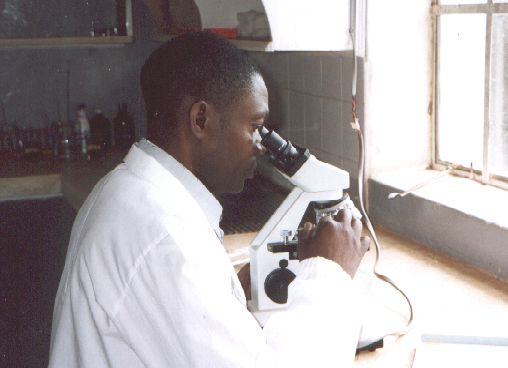

June 2003
Bram Moolenaar, treasurer of ICCF Holland, visited the Kibaale Children's centre in June 2003. This is his report.
First Impression
When I arrived at the project the second school term had just started.
Children were running around the compound to get to their class a little bit
late, playing with friends, etc. Teachers greet me when they walk past. One
of the children smiles to me to get my attention. It is Molly, she entered
the sponsorship program 1996. We talk about how she is doing in school and at
home. She now lives in Kibaale, which means she no longer has to walk a long
distance to school. Molly is in S3, she hopes to continue in S4 next year and
then study to become a secretary.
I made quite a few pictures during my visit. You can find some of them
here.
School
|
The backbone of the project is the school, which continues to grow. There
are a total of 620 children in school now. Most of them are orphans and have
a sponsor. With a total of 32 teachers it takes quite a bit of time to manage
all the people. We provide housing for the teachers, since they all come from
a distance. And although many of them were single when they arrived, several
are getting married and starting a family. This means more houses are needed.
One block with two family houses has been build recently, but this is not
sufficient.
The plan is to double the school, one class each year. Currently the nursery,
kindergarten and P1 classes each have two groups, so that there are 12
classes. Next year will have a double P2. This means more rooms are needed.
One more block of classrooms has been build last year. Another one should
follow this year (although there is no funding for it yet). We will also need
more sponsors! It is not yet clear how we will manage to find enough money to
finance the growth.
|

|
The vocational school continues to run with about 35 children in tailoring,
carpentry and building classes. I watched the building class students working
on making bricks. This is quite heavy work, moving clay around, mixing it and
covering it with grass. We are lucky to have a clay pit very close to the
school. The students will continue to collect and mix clay for a few weeks
(in between theoretical classes) before they use molds to form the bricks, let them
dry and finally pile them up and burn them. If this works out well then we
will be able to use these bricks for extending the school.
The secondary school moved into a new block of nice classrooms. The old
vocational school has been rebuilt to become a physics class. There is a new
half-open building for the vocational school, a bit further away from the
secondary classes, since the carpentry tends to be quite noisy.
A completely new part of the school is the special needs class. Children with
disabilities hardly have any chance to get an education in Uganda. The
project started helping a group of deaf children and a couple of children with
learning problems. This is a challenge, there is hardly any experience in this
area. Fortunately a teacher has been found who has enthusiastically started
teaching these children sign-language.
Clinic
|

|
The clinic is busy as ever. We are happy that one doctor comes to the project
one day each week, even though he now has a job elsewhere. Two experienced
nurses take care of the regular patients, of which there are many. Two more
assistents help with immunization and handing out medicine. One nurse is now
in training, when he comes back another one will go.
When I was visiting the project in October 2001 the laboratory was just
being set up. Now it is fully operational. The lab technician
enthousiastically explained me how he performs the test for malaria,
which is the most often used one. It is quite complicated, involving
different chemicals applied to a blood sample and then putting a drop under
the microscope to look for parasites. Many other tests can be performed, such
as white blood cell count and determining diseases like typhoid, worms, HIV,
gonorrhea and syphilis. This is providing a lot of help to the nurses, it
prevents giving the wrong medicine or referring a patient to the hospital
(which is quite far away when you need to walk).
|
Once a week the truck takes a nurse and a cooling box with vaccination
material to villages to do immunization. The plan is to extend this soon with
doing education, especially for the mothers who bring their children to be
immunized. There is still a lot of misunderstanding among these people about
what to do to prevent sickness.
Sponsored children
I have visited seven children at home. For most families the situation is not
noticable different from the last visit I made to them in October 2001. The
grandmother of the child I am sponsoring myself, Geoffrey Kyomya, is clearly
doing better. Her eye problem is still there, but she can see enough to walk
around and do work. And she appears to be strong. Another family finally
managed to build a new house, which is bigger than the old one and has an iron
sheet roof instead of the leaking grass roof they had for the old house. The
walls are not finished yet though.
Now that the number of sponsored children has grown further, a third person
was hired to handle the work involved with the children. The office now has
Cephas, Charles and Rose. They take care of handling any problems that the
children and their guardians have and if a child does not attend school find
out what the reason is. For children that cannot write English themselves
they translate the letters to sponsors. This keeps them busy, especially with
handling special cases, such as a child that has to be taken to hospital and
visiting a child at home (which may only be reached through a long path over a
hill).
|

|
Conclusion
The most important thing I can see is that the project is steadily growing
and helping more and more children. The growth also means there is more work
in taking care of all issues that come up. Not only with the needy children,
also with the staff that keeps the centre running. Even the smallest thing
can take a lot of time in this remote area (we waited three hours for someone
to fetch a missing piece for the water pump...). Considering this they manage
well and I am very glad to see so many children smile.
Bram Moolenaar
more pictures
top
|